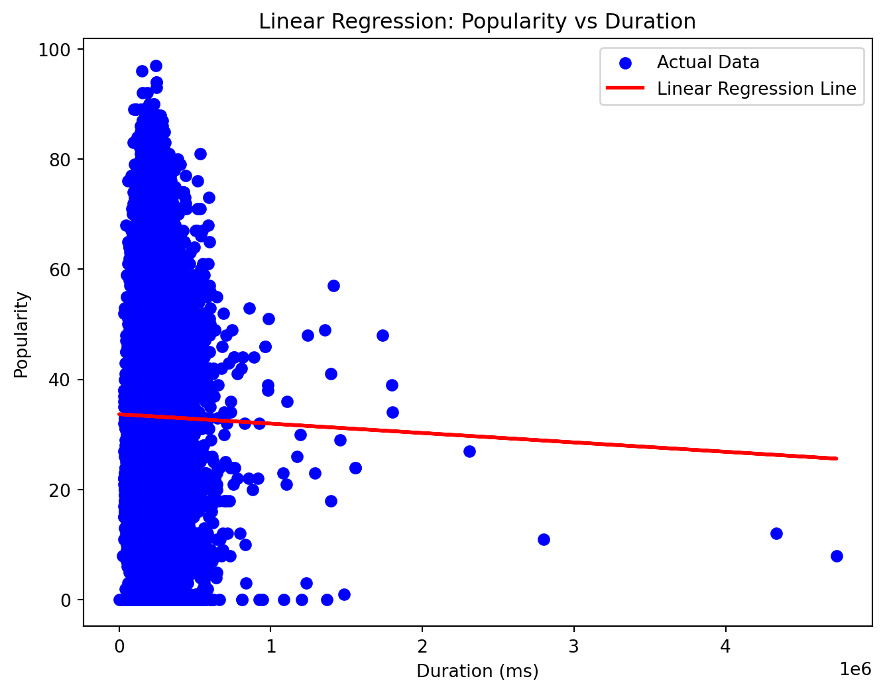
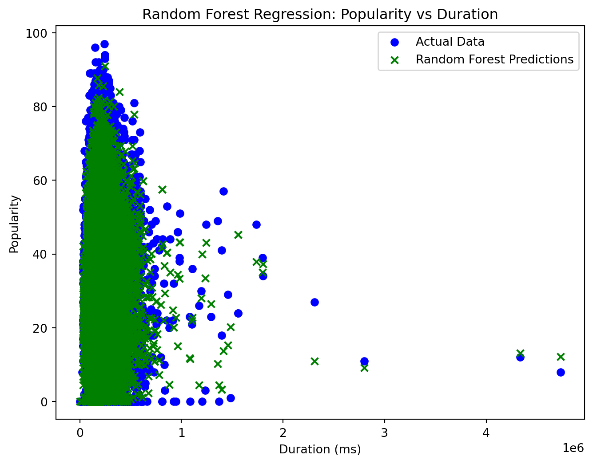

Understanding Linear and Nonlinear Regression in Machine Learning
code
ML
linear regression
non-linear regression
prediction
Author
Stephen Owesney
Published
December 13, 2023
Introduction
In the realm of machine learning, regression analysis serves as a fundamental tool for predicting numerical outcomes based on input features. Two primary types of regression models, linear and nonlinear, play crucial roles in understanding and modeling relationships within data. This blog explores the concepts behind linear and nonlinear regression, their applications, and how they differ in capturing complex patterns.
Linear Regression
Linear regression is a foundational method for modeling the linear relationship between a dependent variable and one or more independent variables. Utilizing the simple yet powerful equation.. \[ y=mx+b \] It employs the method of least squares to determine optimal coefficients that minimize the difference between observed and predicted values. The slope, denoted as m, represents the rate of change, and the y-intercept, denoted as b, is the predicted value when all independent variables are zero. Commonly used in predicting numerical outcomes when a linear relationship is suspected, linear regression is prevalent in fields like economics and finance, providing simplicity and interpretability.
Nonlinear Regression
Nonlinear regression extends modeling capabilities to capture more intricate relationships that deviate from linearity. This approach is crucial when dealing with curves or non-linear patterns. Nonlinear models, such as polynomial, exponential, or logarithmic regression, offer flexibility in representing diverse data patterns. However, selecting the appropriate model and interpreting results pose challenges, and overfitting is a consideration. Nonlinear regression finds applications in physics, biology, engineering, and other domains where complex relationships need to be accurately modeled. Careful consideration of model selection and interpretability is essential in its application.
Practical Applications: Spotify Dataset
Employing these regression methods requires a feel for the data you are modeling and the purpose of fitting the data with a particular regression schema. Lets consider some Spotify data obtained from Kaggle that contains features such as popularity, danceability, energy, loudness, tempo, genre, etc.
Linear Regression
Lets consider the features: popularity and duration. How do you expect these dimensions of the dataset to relate to one another? Song duration has been on the decline for many decades now. Accordingly, you can expect that more popular songs will generally be of a lower duration. One might be inclined to apply a linear regression with these initial assumptions:
Code
# Import necessary librariesimport pandas as pdfrom sklearn.model_selection import train_test_splitfrom sklearn.linear_model import LinearRegressionimport matplotlib.pyplot as plt# Load the Spotify datasetspotify_data = pd.read_csv('../../datasets/spotify.csv')# Select features for linear regressionX = spotify_data[['duration_ms']]y = spotify_data['popularity']# Split the data into training and testing setsX_train, X_test, y_train, y_test = train_test_split(X, y, test_size=0.2, random_state=42)# Create and train the linear regression modellinear_reg_model = LinearRegression()linear_reg_model.fit(X_train, y_train)# Make predictions on the test sety_pred = linear_reg_model.predict(X_test)# Visualize the linear regression lineplt.figure(figsize=(8, 6))plt.scatter(X_test, y_test, color='blue', label='Actual Data')plt.plot(X_test, y_pred, color='red', linewidth=2, label='Linear Regression Line')plt.title('Linear Regression: Popularity vs Duration')plt.xlabel('Duration (ms)')plt.ylabel('Popularity')plt.legend()plt.show()

However you quickly see that a linear regression isn’t exactly effective in caputuring the full essence of the relationship between these two features as they are not so simply related as initally presumed. However, when considering the pareto distribution in relation to artistic output, where most of the music that is created goes practically ignored and only a top few percent of artists get any attention at all, the hidden complexity in the data becomes obvious: there are tons of songs that are of shorter duration that don’t get much listening at all!
This highly dense column of data aggregated in the low duration region of the x-axis will cause the linear regression to weight this area way heavier than the longer duration areas due to the very sparse data of songs that have such a long duration. Due to this, using a linear regression model to fit and predict will always cause predictions of popularity for high duration tracks to be way higher than they actually are depicted by any of the data points.
Therefore, using a non-linear regression technique to model this relationship will yield in much better prediction results.
Random Forest Regression
The richness of the Spotify dataset, encompassing diverse music characteristics, demands a regression model that can adapt to intricate relationships. Linear regression falls short when faced with the nonlinear dynamics between song popularity and duration. Here’s where Random Forest excels — its ensemble of trees can capture complex patterns, allowing it to navigate the dense column of shorter duration songs and make accurate predictions even in the sparsely populated high-duration region.
Code
# Import necessary librariesfrom sklearn.ensemble import RandomForestRegressorfrom sklearn.model_selection import train_test_splitimport numpy as npimport pandas as pdimport matplotlib.pyplot as plt# Load the Spotify datasetspotify_data = pd.read_csv('../../datasets/spotify.csv')# Select features for Random Forest RegressionX = spotify_data[['duration_ms']]y = spotify_data['popularity']# Split the data into training and testing setsX_train, X_test, y_train, y_test = train_test_split(X, y, test_size=0.2, random_state=42)# Create and train the Random Forest regression modelrf_model = RandomForestRegressor(n_estimators=100, random_state=42)rf_model.fit(X_train, y_train)# Make predictions on the test sety_pred_rf = rf_model.predict(X_test)# Visualize the Random Forest regression lineplt.figure(figsize=(8, 6))plt.scatter(X_test, y_test, color='blue', label='Actual Data')plt.scatter(X_test, y_pred_rf, color='green', label='Random Forest Predictions', marker='x')plt.title('Random Forest Regression: Popularity vs Duration')plt.xlabel('Duration (ms)')plt.ylabel('Popularity')plt.legend()plt.show()

The green markers in the Random Forest Regression plot represent its predictions, highlighting its ability to discern the nuances of popularity trends across various song durations. This adaptability and resilience make Random Forest Regression a preferred choice when modeling relationships in datasets with intricate structures.
Linear and nonlinear regressions, each with its unique strengths, empower data scientists to distill complex relationships into actionable insights. As we harness the predictive prowess of these models, we embark on a journey where data transforms into foresight, enabling us to anticipate outcomes, unveil hidden trends, and steer decision-making with confidence. In the convergence of mathematics and data, regressions emerge not just as algorithms but as interpreters, translating the language of numbers into narratives that guide us toward a deeper understanding of the world around us.